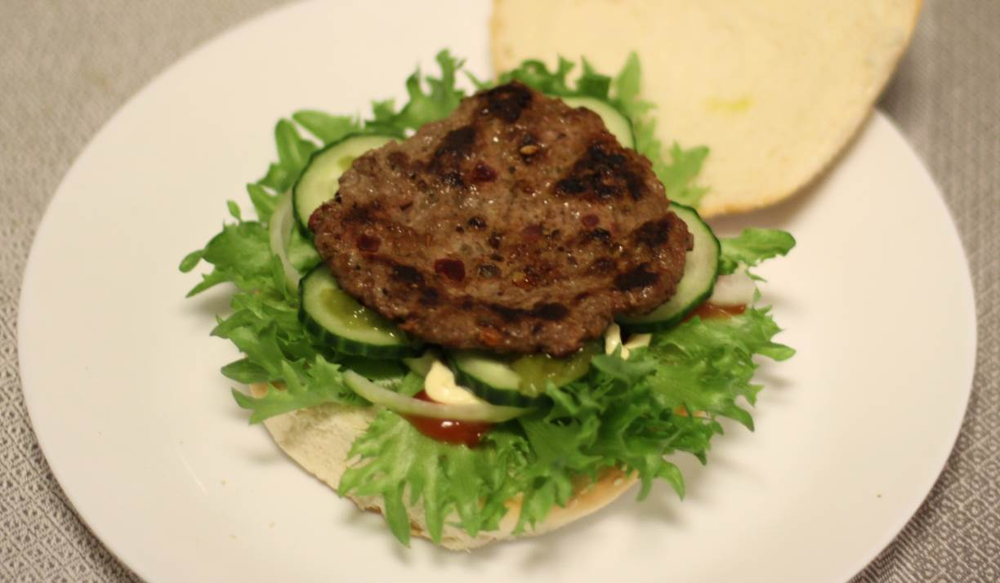

Simons burger
A burger with a lot of taste
metadata
Created on 2018-10-20 Last updated on 2018-12-03
Source: Simon's dad
Estimated time needed: At least 37 minutes. At most 38 minutes.
Ingredients
| 400 | g | minced meat | ||
| 3 | cloves | garlic | ||
| 2 | tsp | salt | ||
| 2 | slices | pickled beetroot | ||
| 1 | tbsp | capers | ||
| 1 | tbsp | black pepper | ||
| 1 | piece | chili pepper |
Scaling
Timeline
Directions
⌛ Active time 10 minutes
- 3 cloves garlic
- 1 tbsp capers
- 2 slices pickled beetroot
- 1 piece chili pepper
chop all the choppables:
Chop (and peel) the garlic, capers, pickled beetroot, and pickled beetroot
⌛ Active time 1 minutes
- 1 tbsp black pepper
- 2 tsp salt
grind the salt and pepper:
Prepare the salt and pepper. In my experience using a mortar for the peppercorns yields the best resutls.
⌛ Active time 2 minutes
- 400 g minced meat
mix everything into a paste/dough:
Take the spices, vegetables(?), and meat, and mix it all together.
You can use a bowl if you're most comfortable with that, I just to it on the cutting board I used previously because I find it easier to mix with my hands on the open surface, and you'll need something to shape the burgers on later anyways.
Note that you want the mix to be as even as possible. If the ingredients lump togheter the burgers will tend to fall apart as you fry the, specially when you're turning them.
⌛ Active time 10 minutes
shape the burgers:
Shape burgers out of the dough/paste you've just made. Try to make them as thin as you can so that you don't end up with ginormous meatballs. Note that this is a bit hard because of all the filling. I find it easiest to go for about 70 grams per burger and try to make them about as thich as a finger.
⌛ Active time 15 minutes
fry the burgers:
It's time to fry the burgers! I like my burgers fried swiftly over high heat to get a nice crust while preserving a juicy inside. Make sure to prepare somewhere to place the burgers as they come out of the pan and you want to put new ones in. If you are making really many you can consider placing the finished ones in the oven under some aluminum foil at about 50 ℃. Optionally, add cheese after turning them to maximize melting time.